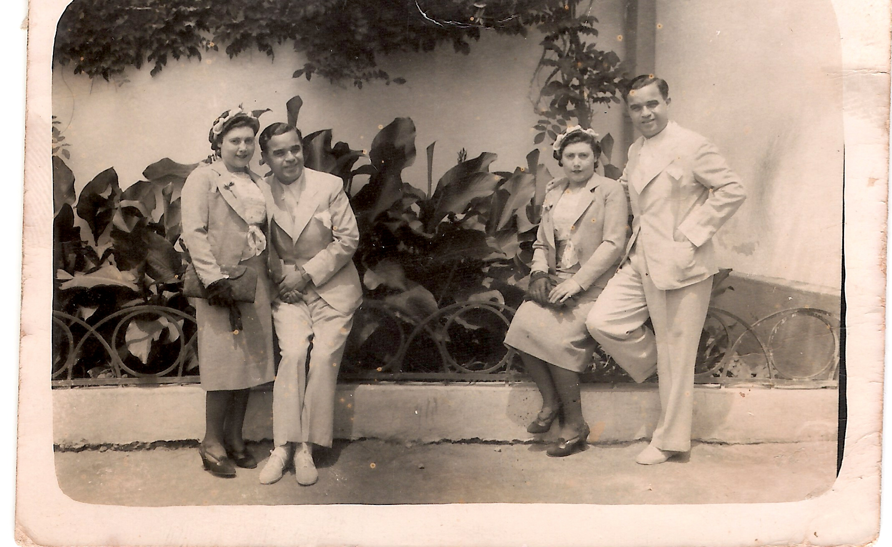

על תהליך הכתיבה
הרעיון להעלות על הכתב את זיכרונות משפחתי, ובעיקר את סיפורה של שרה, סבתי, ליווה אותי למעלה מעשור.
הפרקים הראשונים החלו להתגבש במהלך מגפת הקורונה. אז גם החל התחקיר העמוק אחר השורשים ההיסטוריים שמעצבים את הרקע לדמויות: שעות רבות של חיפוש מקורות, שיחות ארוכות עם אמי, מלכה (בתה של שרה), וליקוט קפדני של פרטי מידע אודות בני המשפחה וגלגוליהם השונים.
המגפה חלפה, פרצה מלחמה, וקובצי הספר נגנזו במעמקי המחשב. נדמה היה שהפרויקט נעצר – עד שהגיע המסע האישי והמטלטל שלי לפולין.
כשפסעתי בגיא ההריגה שבו נספה סבי רפאל, כשעמדתי מול המשרפות באושוויץ ועל פסי הרכבת החלודים בבירקנאו, משהו התעורר בתוכי. סיפור אהבתם המופלא של סבי וסבתי – וסופו הטרגי והכואב – החל לפעום בי שוב בכל כוחו. הרגשתי דחף פנימי עמוק לשוב אל המילים, לפתוח את הקבצים הגנוזים ולהפיח בהם חיים מחדש.
כשקראתי בשנית את הטקסטים הישנים שכתבתי, נסחפתי אל תוך הסיפור כאילו אני קוראת אותו בפעם הראשונה, כקוראת מן הצד – כאילו לא מדובר בבני המשפחה הפרטית שלי, אלא בדמויות ספרותיות עמוקות, מרתקות ועצמאיות.
הבסיס הרגשי והעובדתי לסיפור כולו נטוע בשעות רבות של הקלטות ושיחות נפש עם אמי. תודתי ואהבתי העצומה נתונות לה על כך שפתחה את ליבה בפניי, והסכימה לשקוע מחדש אל תוך זיכרונות ילדותה המורכבת בישראל הצעירה.
הבינה המלאכותית כשותפה ליצירה
במהלך מסע הכתיבה המאתגר הזה, גיליתי שותפה בלתי צפויה: הבינה המלאכותית. הכלים הטכנולוגיים החדשניים שימשו עבורי כעוזר ספרותי אישי מיומן, המסייע בשזירת חלקי זיכרונות, מסמכים יבשים, תמונות והקלטות שמע לכדי יצירה אחת זורמת, נגישה ומרגשת.
העוזר הטכנולוגי אפשר לי לבצע תחקיר היסטורי רחב היקף ודיוק של פרטים קטנים ויומיומיים שחיוניים לאמינות הספר. בין היתר נחקרו לעומק:
- טכנולוגיות צילום בשנות ה-30 ואופן שימוש במסננים ידניים, עולם התפירה העילית (Haute Couture) והבדים בשנות ה-50, שזירת גומיות בגלגלי אופניים בשנות ה-60 והעלאת עצמות נפטרים לישראל בשנות ה-70.
- הבסיס הפיזיולוגי של היריון תחת תנאי רעב קיצוניים במחנות, מגפת הטיפוס, ומסלולי רכבות הבקר אל מחנות ההשמדה.
- הקשרים היסטוריים רחבים: איסטנבול ויוון שבין מלחמות העולם, הקמת נמל תל אביב, חורבנה של קהילת סלוניקי המפוארת, סיפורה של האונייה 'אנה מריה', בית החלוצות בתל אביב, ומערך משפחות האומנה בקום המדינה.
לאחר חודשים רבים של עבודה משותפת והנחיות עדינות – החל מדיוק השפה, העשרת המשלב והתוכן ועד להתאמת המונחים והביטויים לרוח התקופה – שימשה לי הבינה המלאכותית כ"מכחול" שבאמצעותו ציירתי את פרקי הרומן. קול זיכרונותיה של אמי סיפק את הבד העשיר והחומר הגולמי, בעוד הבינה המלאכותית אפשרה לי לחבר את החלקים תפר אחר תפר, ללטש את קצוות השפה, ולהעניק לסיפור המשפחתי לבוש ספרותי ראוי ומכובד.
איך נכתב הפתיח לפרק "רפאל"
הצצה לתהליך הפיתוח של פרק מרכזי בספר – משלב הזיכרון המשפחתי הגולמי, דרך המחקר הטכנולוגי ועד לטקסט המלוטש.

אמא שלי, מלכה, סיפרה לי שאביה, רפאל, היה חובב צילום נלהב. המצלמה הישנה שלו שרדה את המלחמה, וליוותה אותה בטיולים שנתיים ואירועים משפחתיים שנים אחר כך.
אותי סקרנה תמונה שמצאתי בקופסת התמונות שלה. זו הייתה תמונה משעשעת ומסתורית: ראו בה את רפאל ואת שרה מופיעים פעמיים באותו פריים! פעם אחת שרה עומדת ליד גדר ורפאל נשען לצדה ומחייך לדמות דמיונית, ופעם שנייה שרה יושבת על החומה ורפאל מניח עליה יד אוהבת.
התרשמתי מהיכולת של רפאל לצלם תמונה מורכבת כזו, בטכנולוגיה של אותה תקופה, והחלטתי לחקור אותה.
כדי לתת לזיכרון של אמי נפח היסטורי אותנטי, גייסתי את הבינה המלאכותית לחקור את הפרטים הטכנולוגיים והתרבותיים של התקופה:
- מצלמת Rolleiflex: כיצד פעל מנגנון החשיפה הכפולה (Double Exposure) במצלמה זו, השימוש בפיסת קרטון שחור אטום כמסכת עדשה ידנית (Lens Masking), ואופן הדריכה של תריס העלים (Leaf Shutter) מבלי לקדם את סרט הפילם.
- שחזור מרחבי: עיצוב הקשתות והמרצפות של כיכר אריסטוטלוס המפורסמת בסלוניקי, שם נלקח הצילום המקורי.
- אופנת הקוטור של שנות ה-30: שחזור מדויק של בגדיה של שרה – מקטורן משי מחויט, כובע פילבוקס קטן, חצאית עיפרון המגיעה בדיוק עד קו הברך, כפפת עור בודדת ומפגש בדים בשוק 'בזסטני' (Bezesteni) המפורסם.
שילוב הזיכרון עם המחקר הטכנולוגי יצר את התיאור הציורי הבא:
"רפאל הוציא מכיסו חתיכת קרטון שחור ואטום שגזר בקפידה... הוא הצמיד אותה אל חצי העדשה השמאלית של המצלמה... 'אנחנו הולכים לרמות את הזמן, אהובתי', ענה רפאל. 'והזמן דורש סבלנות. את תעמדי כאן, ותדברי עם עצמך מהצד השני של הגדר'..."
"...בתוך החדר החשוך המאולתר שבנה בחדר הרחצה שלהם, בין ריח הסבון הטורקי לכימיקלים החריפים, הוא יראה מאוחר יותר איך שתי 'שרות' פוגשות זו את זו בתוך פריים אחד, ואיך שני 'רפאלים' חולקים את אותו יקום, כאילו הזמן עצמו התקפל לרגע."
"אני מזמינה אתכם לצעוד איתי בנתיבי הזיכרון הללו, ומגישה לכם את סיפורה של משפחתי באהבה ובדרישת שלום מהדורות שקדמו לנו."
האקוסיסטם הדיגיטלי של הספר
הספר הדיגיטלי
הורידו וקראו את הרומן ההיסטורי במלואו במכשיר הנייד או הטאבלט שלכם בפורמט EPUB/PDF מותאם.
לרכישה דיגיטליתדמויות מפתח
הכירו את הענפים המשפחתיים של משפחת אלטרס וגלו את סיפורי החיים המרתקים שמאחורי כל דמות.
הכירו את הדמויותסדרת הפודקאסטים
האזינו לפרקים נבחרים בקולה של המחברת, המקריאה ומשתפת בסיפורים שמאחורי הפרקים ההיסטוריים.
להאזנה לפודקאסט